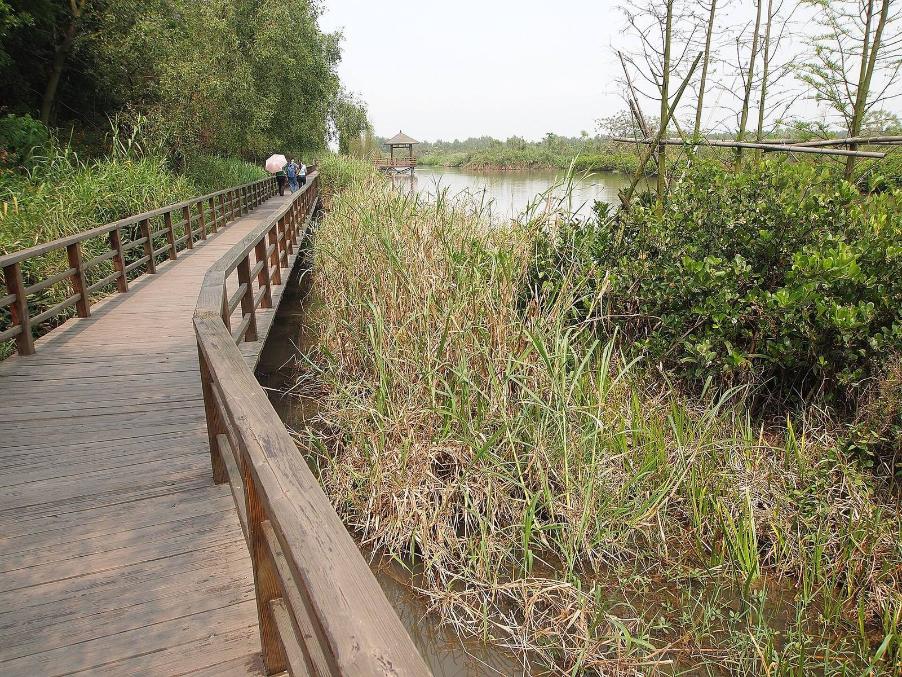
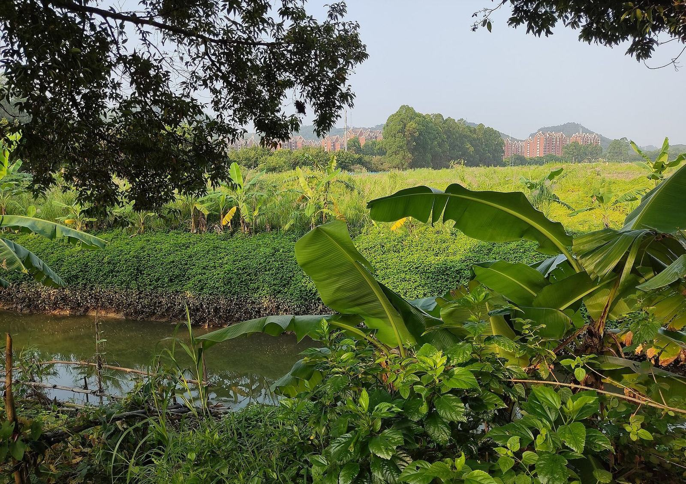

الرئيسية / المشاريع
المشاريع والشركاء
فقط ما يظهر في السجل العلني.
البنود أدناه مستمدة من إشعارات حكومية ومناقصات وصحافة معاصرة. وهي ليست محفظة تسليمات في الخارج. ولم تُدرج مراجع مشاريع أجنبية لأنه لم يُعثر على أي منها في ذلك السجل.
المشاريع
عمل في نانشا يمكن تسميته وتأريخه.
- وادي الزراعة في منطقة الخليج · جارٍتطوير الحديقة وتشغيلها. الشركة هي جهة البناء والتشغيل. رمز المشروع 2302-440115-04-01-418726. مساحة الأرض التخطيطية نحو 34,104 م². إجمالي الاستثمار المنشور نحو 853.1296 مليون رنمينبي للحديقة ككل. المساحة المبنية في المرحلة الأولى 19,548 م²؛ والمرحلة الثانية نحو 72,050 م² من المباني البحثية والثقافية. حجم التربية التجريبية السنوي المصمَّم نحو 50 طنًا، وفق اعتماد 2 شباط/فبراير 2026.
- 28 كانون الأول/ديسمبر 2023تشغيل ورشة المرحلة الأولى والإسكان. دخلت ورشة المصنع الذكي للاستزراع السمكي النباتي مرحلة تشغيل علنية في حديقة نانشا التجريبية للزراعة الحضرية.
- 1 تموز/يوليو 2024مناقصة بحث تربية سمك الماندرين في النظم الدائرية. دعوة منشورة، بسقف 500 ألف رنمينبي، لطلب دعم بحثي في أقلمة اليرقات المبكرة وحفظ الأمهات في النظم الدائرية.
- 21 شباط/فبراير 2025مناقصة منشأة إعادة تدوير مياه صرف الاستزراع. نحو 38 مو؛ سقف العطاء 2,084,328.12 رنمينبي؛ أهداف يومية منشورة قدرها 100 طن من مياه الصرف و950 كغ من المخلفات الصلبة. والشركة هي صاحبة المشروع وجهة الطرح.
- 5 كانون الأول/ديسمبر 2025رخصة تخطيط بناء المبنى 3. صدرت للشركة لمبنى دعم بحثي وقبو في وادي الزراعة في منطقة الخليج.
- 10 أيلول/سبتمبر 2026إطلاق تشيوهاو 5 وتشيوهاو 8. أُقيم في الدورة الثانية عشرة لمعرض قوانغتشو الدولي لمصايد الأسماك، مع الإعلان في اليوم نفسه عن استقطاب موزّعين داخل الصين.


تعاون مبلَّغ عنه
أسماء وردت في تقارير علنية، مدرجة بوصفها تعاونًا — لا مشاريع مكتملة في الخارج.
في حدث التشغيل بتاريخ 28 كانون الأول/ديسمبر 2023، ذكرت الصحافة لوحة لقاعدة التجارب البيئية للتربية المصنعية لفريق الأكاديمي ليو شاوجون، واتفاقًا إطاريًا مع شركة يويه لو شان. وتُسجَّل هنا بوصفها تعاونًا مبلَّغًا عنه في تلك المناسبة.
وفي إطلاق تشيوهاو في أيلول/سبتمبر 2026، ذكرت الصحافة أن تشي هوي وقّعت اتفاقات تعاون استراتيجي مع الجهات المدرجة إلى الجانب، وأن تعاونًا في طرائق الصبغ للتشخيص المجهري بالذكاء الاصطناعي ذُكر مع شو لي ون من معهد بحوث مصايد بحر الصين الجنوبي التابع للأكاديمية الصينية لعلوم مصايد الأسماك.
ذُكرت عند الإطلاق عام 2026
- شركة قوانغدونغ شيواندا للاختبار (广东旋达检测)
- شركة يويا للتكنولوجيا (渔雅科技)
- شركة بايلي للتكنولوجيا الذكية (百俐智能)
- شركة قوانغتشو دينغهاي للتكنولوجيا (广州丁海科技)
- شركة قوانغتشو نانشا مينغشي للاختبار (广州南沙明曦检测)
- شو لي ون، معهد بحوث مصايد بحر الصين الجنوبي، الأكاديمية الصينية لعلوم مصايد الأسماك